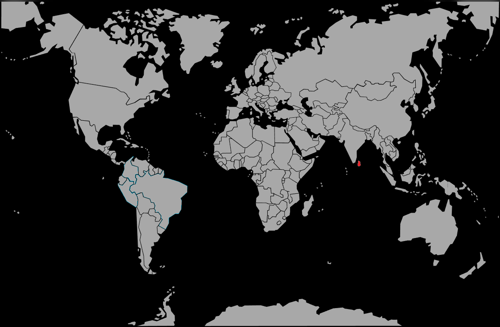

Systématique
- Ordre : Anabantiformes
- Famille : Osphronemidae
- Genre : Malpulutta
- Espèce : Malpulutta kretseri
Malpulutta kretseri, parfois appelé gourami moucheté ou « ornate paradisefish », est un petit gourami labyrinthidé très rare en aquariophilie, endémique du sud‑ouest du Sri Lanka.
Il atteint environ 5–6 cm, avec un corps sombre ponctué de taches claires et des reflets bleutés ou verdâtres sur les nageoires, particulièrement marqués chez le mâle.
C’est une espèce calme mais extrêmement timide, qui passe beaucoup de temps près du fond ou dans les abris végétaux ; un bac spécifique, peu peuplé et très planté est fortement conseillé.
Les jeunes peuvent être maintenus en petit groupe, mais à l’âge adulte il est préférable de conserver un couple ou un trio (un mâle pour deux femelles) pour limiter la compétition et le stress.
Mode : constructeur de nid de bulles ; le mâle érige un nid, souvent sous un surplomb ou parmi les plantes de surface, puis enserre la femelle lors de la ponte avant de récupérer les œufs et de les placer dans le nid.
Le mâle garde et ventile les œufs jusqu’à l’éclosion (environ 2–3 jours), puis jusqu’à la nage libre ; la femelle doit généralement être retirée après la ponte pour éviter la prédation sur les œufs.
Dimorphisme sexuel : mâle plus grand, plus coloré, présentant des nageoires plus développées et des motifs plus contrastés ; femelle plus petite, au ventre plus rebondi lorsqu’elle est gravide.
Espérance de vie : généralement 5 à 8 ans en aquarium, si l’eau est stable, douce, acide et si le poisson est maintenu dans un environnement calme et sécurisé.
Dans la nature, Malpulutta kretseri habite de petits ruisseaux forestiers très ombragés, peu profonds, à courant lent, avec un fond sablo‑vaseux recouvert de feuilles mortes, de branches et de racines, et une végétation rivulaire dense.
Répartition
Origine naturelle :
- Endémique du sud‑ouest du Sri Lanka, dans la zone humide tropicale à forte pluviométrie.
- Présent dans de petits cours d’eau forestiers et affluents peu profonds de plusieurs bassins fluviaux côtiers.
L’espèce est associée à des milieux fortement menacés par la déforestation et la fragmentation des forêts, ce qui en fait un poisson à statut de conservation préoccupant.
Paramètres de maintenance
Température : 24 à 28 °C, optimum autour de 25–26 °C.
pH : 5,5 à 7,0, avec une préférence pour une eau douce et légèrement acide.
GH : 3 à 10 °dGH, eau douce à moyennement douce.
Courant : très faible à lent, avec une filtration douce, un éclairage tamisé et de nombreux abris (feuilles, racines, noix de coco, plantes flottantes).
Volume conseillé : à partir de 60–80 L pour un couple ou un trio, en bac spécifique très planté et calme.
Régime alimentaire
Régime : carnivore à micro‑prédateur ; se nourrit surtout de petits invertébrés aquatiques, larves d’insectes et micro‑crustacés.
En aquarium, il apprécie particulièrement les proies vivantes et congelées de petite taille (daphnies, artémias, larves de moustique) et peut apprendre à accepter des aliments secs fins, mais une part importante de nourriture vivante reste recommandée.